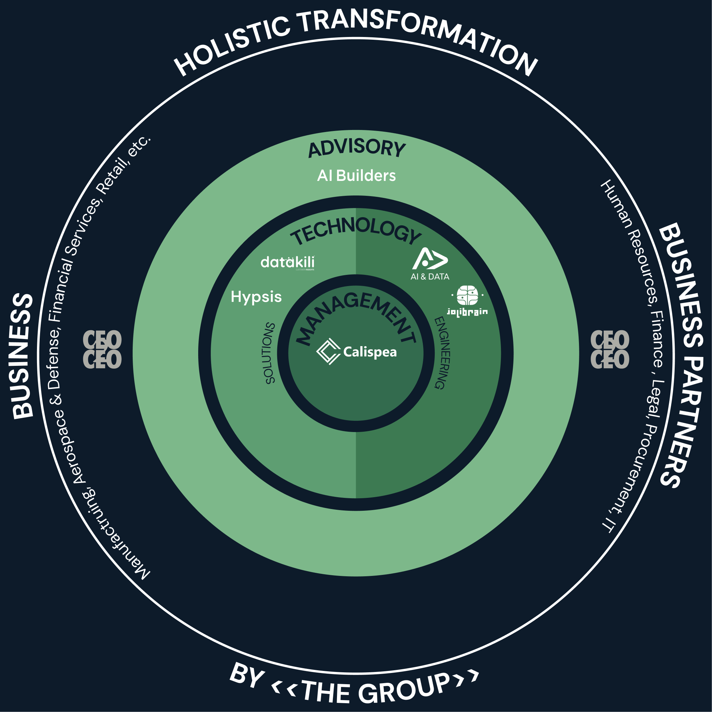
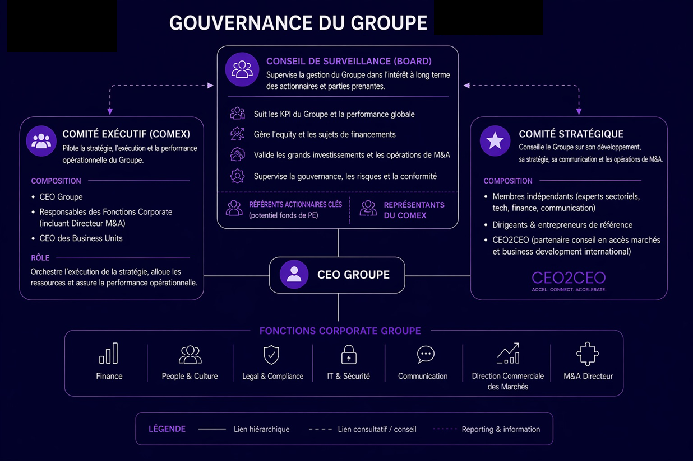
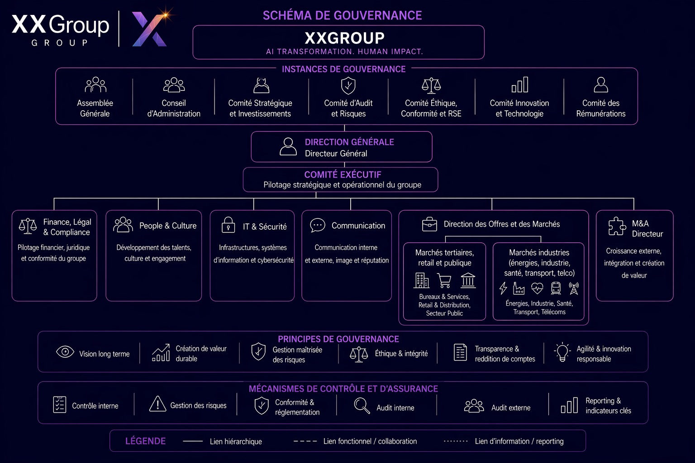

Un seul groupe pour porter la transformation IA d'une organisation, du diagnostic stratégique au déploiement en production — et laisser le client propriétaire et autonome.
Confidentiel · Avril 2026
02 / 16
Acte I
Le problème
« 88 % des entreprises ont déployé l'IA. 6 % avec un impact réel. »
Le marché de la transformation est morcelé.
Les organisations veulent se transformer. Le marché ne leur offre que des fragments.
Les ESN et intégrateurs
Ils vendent du temps-homme et des POC qui ne passent jamais en production. Le client reste dépendant. Les données partent dans le cloud. Personne ne s'occupe des équipes.
Les éditeurs SaaS
Lock-in maximal, données hors de contrôle, personnalisation limitée. Le client loue une solution qu'il ne comprend pas et ne possède pas.
Les cabinets de conseil
Ils livrent des slides et partent. Pas de déploiement, pas d'infra, pas de suivi. Le plan reste dans un tiroir.
80%+
des projets IA échouent
RAND Corporation, 2024
85%
des modèles IA n'atteignent pas la production
Gartner
8%
des grandes entreprises ont déployé l'IA à l'échelle
McKinsey / Institut de l'Entreprise, 2025
Les démarches de transformation qui n'abordent pas le sujet dans sa globalité sont vouées à l'échec.
03 / 16
Acte I
Notre réponse
Un groupe comme interlocuteur pour une transformation « end to end ».
Du diagnostic stratégique au déploiement en production, en passant par la structuration des données et l'accompagnement des équipes.
Découverte
Modèle cible de l'entreprise pour un plan de création de valeur
→
Implémentation
Données & outils du quotidien
→
Pérennisation
Formation, reskilling, transitions
Souveraine
Les données restent chez le client. Pas de dépendance cloud, pas de juridiction étrangère. EU AI Act, NIS2, réglementations sectorielles.
Émancipatrice
Le client est propriétaire de tout — données, modèles, apps, code. La plateforme reste chez lui pour les mises à jour et le support.
Scientifiquement rigoureuse
Nos propres modèles IA, open source, évalués par les pairs, éprouvés en production. 10 ans de R&D. Pas de boîtes noires.
Humaine
Chaque déploiement inclut un plan humain. Formation, reskilling, coaching. Personne n'est laissé de côté.
04 / 16
Acte I
Positionnement
Ce que chaque acteur fait. Ce qui lui manque.
Nous assemblons les meilleures briques existantes plutôt que de tout construire from scratch.
Acteur
Ce qu'il fait
Ce qui lui manque
Accenture / Capgemini
Transformation IA grands groupes
Trop cher pour ETI, pas souverain, lock-in
ESN mid-market
Intégration tech, data
Pas de vision stratégique, pas de modèles IA propriétaires
Cabinets conseil (McKinsey, BCG)
Stratégie, diagnostic
Pas de déploiement, pas d'infra, partent après les slides
Éditeurs IA (Dataiku, Palantir)
Plateforme data / IA
Lock-in, cloud, pas d'accompagnement
Cabinets conseil Data & IA
Stratégie IA, Master Plan, CDO Office
Pas de plateforme, pas de modèles IA, dépendants d'intégrateurs
Aistral
Stratégie + Data + IA + Infra souveraine + Humain
Intégré, souverain, pas de lock-in, propriété client
Les dimensions change management, formation, reskilling sont aujourd'hui adressées par des cabinets de conseil typés « RH » — alors qu'elles devraient être traitées dès l'amont et jusqu'à l'aval des projets de transformation. Les technologies mises en jeu changent les façons de travailler, et les experts technologiques peuvent contribuer au changement des organisations et des people.
05 / 16
Acte II
Le groupe
5 capacités. 1 mix produit / services. L'ensemble en synergie.
Le groupe s'organise autour de cinq capacités transverses, articulées sur le cycle complet de transformation : Discovery, Build, Run.
Stratégie Data & IA
COMEX, Master Plan, CDO Office.
Discovery + Design
Ontologie & data engineering
Cartographie, ingénierie des données, intégration legacy, ETLs, connecteurs, cyber.
Discovery + Build
Plateforme souveraine & applicatifs
Création, déploiement, supervision d'apps IA on-prem. Capitalisation de l'expérience.
Build + Run
Excellence scientifique
Modèles IA open source, évalués par les pairs.
Build + Run
Transformation humaine
Formation, reskilling, conduite du changement.
Build
Des verticales sectorielles corporate apportent l'expertise sectorielle. Les capacités apportent les expertises métiers et technologiques. C'est la somme des deux qui produit la transformation.
06 / 16
Acte II
Le groupe — construction par étapes
Un groupe de 19–20 M€ dès l'amorçage, visant 150–200 M€ à 5 ans.
Filiales autonomes, orchestration groupe
Filiales autonomes dans leur knowledge management et delivery, en synergie grâce à une orchestration du commerce groupe et soutenues par des services partagés.
Trois pôles qui travaillent de concert
Les BU Advisory, Technology et Management travaillent de concert pour des offres globales — et adressent également leurs propres business.
Extension par briques successives
Extension des offres, des compétences, des accès marchés et pays
Des partenaires viennent supporter le développement et les accès à des solutions « marchés ouvertes »
Le groupe coordonne et supporte le développement et les besoins de chacune, dont le M&A

Holistic Transformation by Aistral — Advisory · Technology · Management
07 / 16
Acte III
Phase 1 — Discovery
Hypsis · plateforme méthodologique
Construire la tour de contrôle de la transformation.
L'engagement commence au niveau du comité exécutif. Le plan qu'on construit n'est pas un PowerPoint statique, mais un jumeau numérique dynamique et vivant permettant de simuler puis de stress-tester l'impact des initiatives potentielles. Le livrable est une feuille de route de transformation à exécuter : gouvernance, schéma directeur, ressources et planning.
Ce que nous faisons
Acculturation des dirigeants — lecture stratégique de ce que l'IA change dans leur modèle d'affaires, leur chaîne de valeur, leur structure de coûts
Cartographie des opportunités — cas d'usage par fonction, performance attendue, impact business et humain quantifié
Feuille de route budgétée — plan priorisé avec business cases, séquencement réaliste, analyse make-or-buy
Fondations de l'ontologie — premier modèle de données structuré à partir des processus et flux du client
Évaluation des irritants dans vos équipes
Construction du jumeau numérique de l'entreprise
Ce qui rend cette phase différente
Elle n'est pas déconnectée de l'exécution. Il n'y a pas de « passation » à un intégrateur tiers — les mêmes personnes qui diagnostiquent sont celles qui accompagnent le déploiement.
Implication directe de nos experts métier.
Briques activées
Conseil stratégique Data & IA · Ontologie & données
Revenu
Forfait
08 / 16
Acte III
Phase 2 — Build
Exécuter le plan de création de valeur en outillant l'organisation.
Le conseil et le build ne sont pas séquentiels — ils sont intégrés. Résultats tangibles en semaines.
Infrastructure
Co-construction avec le DSI. Plateforme Hypsis installée on-prem. Pipelines de données connectés. Ontologie structurée.
Applications métier
Chaque cas d'usage devient un outil en production. Pas des POC — des outils utilisés au quotidien, alimentés par l'ontologie et les modèles IA.
Acculturation DSI
Le DSI est un allié. On construit avec lui, on lui transfère la compétence. Il devient le gardien de l'écosystème IA.
Formation & reskilling
Plan humain en parallèle dès le premier jour. Formation, reconversion, coaching des managers, conduite du changement.
Toutes les briques du groupe sont activées. Conseil · Ontologie · Infrastructure · Data–IA · Humain. · Revenu : régie.
09 / 16
Acte III
Phase 3 — Run
Hypsis · plateforme sécurisée et souveraine
Le client est autonome. Le produit reste chez lui.
Le client peut partir avec tout ce qui a été construit. C'est précisément parce qu'il peut partir qu'il choisit de rester.
Plateforme en place
Hypsis reste déployée chez le client. Les équipes internes construisent de nouvelles apps, adaptent les existantes — sans dépendre de nous.
Intelligence pérenne
Modèles IA, algorithmes d'optimisation, briques documentaires restent embarqués. Chaque mise à jour amène de nouvelles capacités — sans projet de réintégration.
Propriété totale
Données, modèles, applications, code — tout appartient au client. Rien n'est piégé dans un cloud ou derrière une API propriétaire.
Ce qui génère du revenu récurrent : l'abonnement Hypsis — mises à jour continues de la plateforme et des modèles dans un environnement qui évolue vite, formation et certification permanentes des équipes client.
10 / 16
Acte IV
Modèle économique
Nous vendons de l'intelligence. Humaine et artificielle.
Dans les deux cas, une partie de cette intelligence reste chez le client — dans les compétences transférées, les modèles déployés, les applications qu'il possède. C'est ce dépôt permanent qui crée la valeur et la relation de long terme.
Intelligence humaine
Jours de conseil, déploiement, formation.
One-shot.
Intelligence artificielle
Compute, modèles IA, mises à jour, certification des équipes client.
Récurrent.
Trajectoire du mix
Aujourd'hui : ~95% humaine / 5% artificielle
Année 3 : ~73% humaine / 27% artificielle
Année 5 : ~63% humaine / 37% artificielle
L'intelligence artificielle est le multiplicateur de valorisation.
11 / 16
Acte IV
Le chaînon manquant — pourquoi AI Builders dans le groupe
La capacité Stratégie Data & IA.
La phase de Discovery est le point d'entrée de toute la chaîne de valeur. C'est elle qui convainc le COMEX et génère le pipeline.
Les atouts d'AI Builders pour le groupe
Cabinet français, indépendant, entièrement dédié à la stratégie Data & IA
Positionné en amont — auprès des DG, CDO, responsables métier
Cycle de vie complet formalisé : de l'acculturation à l'autonomie des BU
Écosystème à façon : université interne, veille tech, capitalisation des connaissances
Ce que le groupe apporte
Accès élargi aux marchés (dont l'industrie)
Capacité Ontologie, Data Engineering, Infra, Cyber
Capacité Plateforme souveraine
Capacité Excellence scientifique (modèles IA du futur)
Effet de taille et attractivité sur les consultants
Ambition de développement avec un acteur du PE
Demain, le conseil stratégique ne pourra plus se contenter de recommander — il devra déployer. Pour déployer, il faut une plateforme, des modèles, et une infrastructure.
12 / 16
Acte V
Structure
Un groupe structuré pour porter 200 M€ et au-delà.
Trois pôles — Advisory · Technologies · Solutions & Management — orchestrés par un corporate qui mutualise les fonctions et active les synergies.
Un groupe exposé et pro-actif
Communicant, impliqué dans les réseaux (France et US), en veille techno et pro-actif sur les opportunités de marché.
Comité exécutif, conseil de surveillance, comité stratégique — chacun avec un rôle clair, des principes partagés et des mécanismes d'assurance.

Gouvernance du groupe — COMEX · Conseil de surveillance · Comité stratégique

Schéma de gouvernance — instances · principes · mécanismes de contrôle
14 / 16
Acte VI
Pourquoi nous rejoindre
Equity model — alignement, levier, liquidité.
Tous co-actionnaires du même groupe. Investisseurs professionnels pour supporter le M&A. Alignement d'intérêts à la création de valeur collective.
Co-actionnariat
Tous co-actionnaires du même groupe
Investisseurs professionnels pour supporter le M&A
Alignement d'intérêts à la création de valeur collective
Effet de levier type LBO
Protections fondateurs
Définitions de droits et protections aux fondateurs
Périodes de liquidité et horizon de sortie
Mécanismes d'incentive économiques selon la performance du projet
Cible de retour à 5 ans
MoMx projet > 3,5x
IRR % > 28 %
multiple 13x
Aujourd'hui
Revenu ~ 20 M · EBITDA ~ 3 M
Equity ~ 30 M · Dette ~ 5 M
À 5 ans
Revenu ~ 50 M + 150 M · EBITDA ~ 10 M + 25 M
Equity ~ 30 M + 90 M · Dette ~ 5 M + 45 M
15 / 16
Acte VI
L'équipe
Une équipe expérimentée qui s'étoffe.
Construction de groupe · Transformation industrielle · R&D IA en production · Scale-up commercial.
Yvan Chabanne
CEO du groupe
Fondateur et dirigeant de Scalian pendant 10 ans (60 → 600 M, 13 pays, 3 offres, 6 marchés) ; 3 LBO, 15 M&A, croissance 50/50 organique/M&A. 12 ans Altran Technologies (COO France, CEO Branche Automobile Europe). 6 ans ingénieur SAFRAN / GEAE. 2,5 ans Armée de Terre (officier). ENSMA · PhD Physique.
William Le Ferrand
CTO groupe · CEO Hypsis
Ex-CTO Sogeclair (ETI aéronautique, 1 300 pers.). Transformation digitale d'une ETI industrielle cotée. Créateur de la plateforme Hypsis. Ex-ingénieur logiciel dans la Silicon Valley.
XXX
Chief Scientific Officer
10 ans de R&D IA en production. 5 PhDs, publications NeurIPS / ICML / AAAI. Clients : Airbus, Dassault, SNCF, CNES. 50+ GPUs.
Florian Lepage
CRO Vertical Tertiaire / Public
Ex-COO d'un éditeur de logiciel RH. Expérience du scale-up commercial et de la structuration d'une offre récurrente.
À pourvoir — postes clés
CFO
CEO Advisory
CRO verticale industrielle
CEO transformation humaine
M&A
HR
Stratégie & Communication
…
16 / 16
Acte VI
Prochaine étape
Construisons ensemble.
Le groupe se construit maintenant. Les briques techniques existent. L'équipe se met en place.
Prochaines étapes
Échange informel entre fondateurs
Démonstration de la plateforme
Exploration des synergies
Convaincre ensemble le futur partenaire investisseur